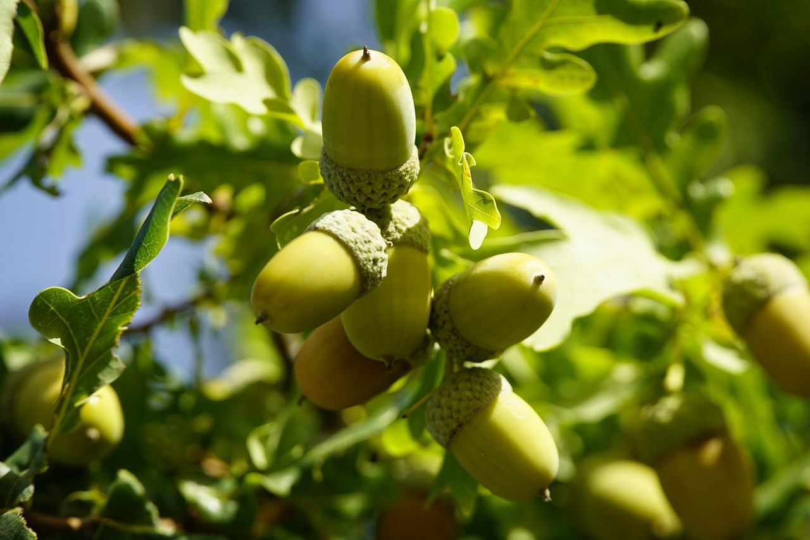
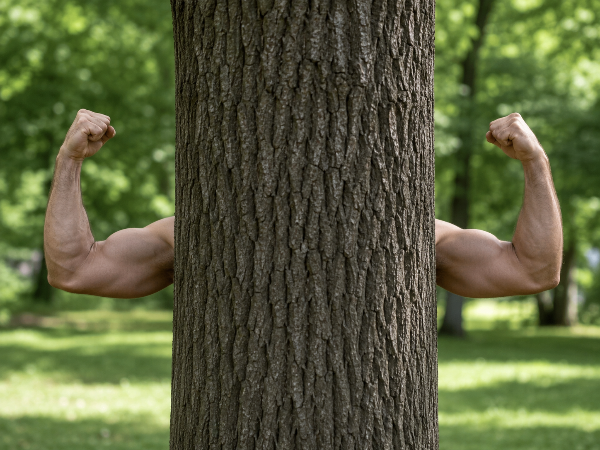
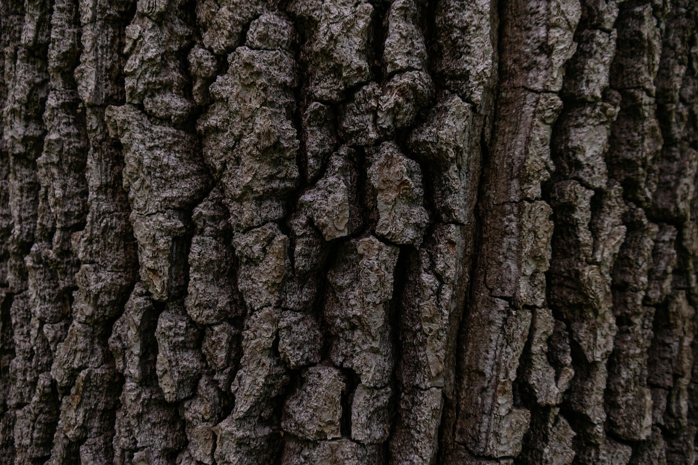
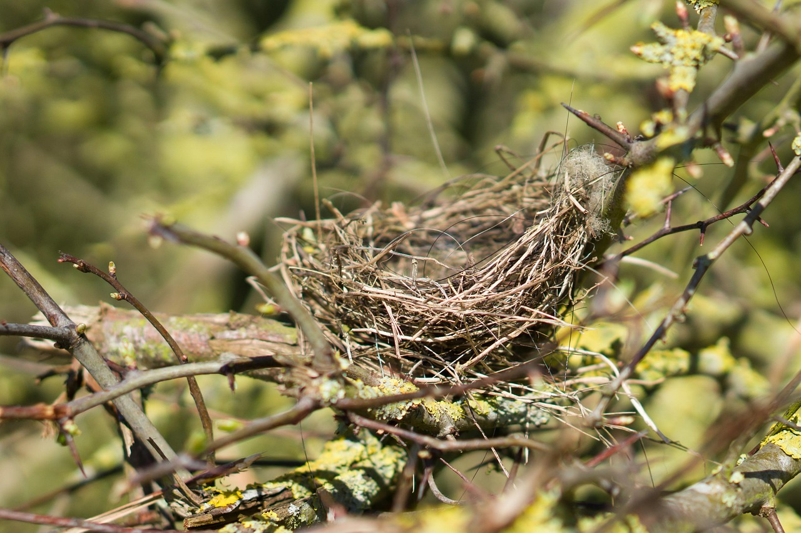
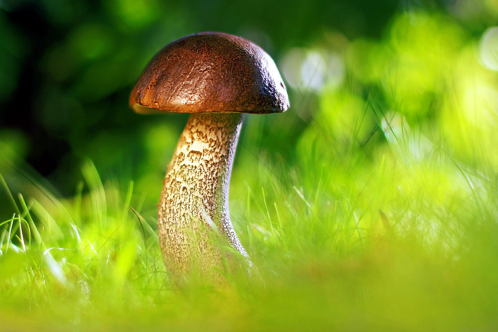

Архітектурні зв'язки: Екосистема Дерева

Дуб
The Object
Дуб (Oak)
Центральна конкретна сутність.
Це живий екземпляр, який наслідує Дерево і є центром усіх зв'язків.

Дерево
Abstract Class
Дерево (Tree)
Абстрактний базовий клас екосистеми.
Визначає загальну поведінку та атрибути, спільні для всіх дерев.

Кора
Component
Кора (Bark)
Внутрішній компонент об'єкта.
Складова частина Дерева з жорстким життєвим циклом.

Гніздо
Aggregate
Гніздо (Nest)
Зовнішня сутність-контейнер.
Знімний об'єкт, який агрегується деревом.

Гриб
Associate
Гриб (Mushroom)
Сусідній елемент системи.
Незалежний об'єкт, що взаємодіє з деревом.
Сонце
Dependency
Сонце (Sun)
Зовнішній ресурс.
Ресурс, необхідний для роботи внутрішніх методів дерева.
Наслідування (Inheritance)
Зв'язок типу 'IS-A'. Клас успадковує властивості предка.
Приклад:
Дуб отримує коріння та здібність до фотосинтезу від абстрактного класу Дерево.
Композиція (Composition)
Жорстка залежність ('PART-OF'). Частина не існує без цілого.
Приклад:
Кора є частиною Дерева. Якщо дерево знищується, Кора зникає разом з ним.
Агрегація (Aggregation)
Слабкий зв'язок ('HAS-A'). Частини можуть існувати окремо.
Приклад:
Дерево містить Гніздо, але гніздо може бути переміщене на інше дерево.
/
Асоціація (Association)
Структурний зв'язок між незалежними об'єктами екосистеми.
Приклад:
Взаємодія Дерева та Гриба (обмін речовинами через ґрунт).
Залежність (Dependency)
Тимчасовий зв'язок ('USES'). Об'єкт потрібен для методу.
Приклад:
Дерево тимчасово використовує Сонце для процесу фотосинтезу.
/
×
Тип зв'язку: теорія